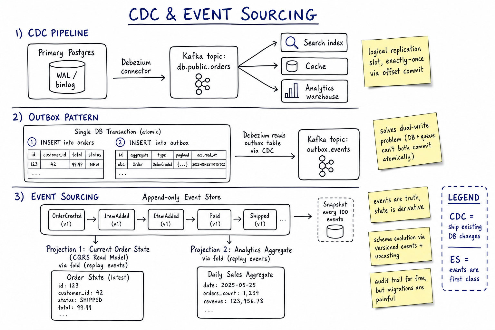

CDC & Event Sourcing // Concept
How to keep multiple data systems in sync, and how to reconstruct state from a log of events. CDC ships existing DB changes; Event Sourcing makes events the primary truth. Both solve the dual-write problem.

Three layers: CDC pipeline (Postgres WAL → Debezium → Kafka → consumers); Outbox pattern (atomic DB tx into outbox table, then CDC); Event Sourcing (append-only event store with CQRS projections + snapshots).
01 — The Problem
You have a Postgres of record. You also want: a search index, a cache, an analytics warehouse, a downstream service notified, and an audit log. Naive answer: write to all six. That's the dual-write problem — the writes are not atomic across systems and any one of them can fail.
The fix is the same idea in two flavors: have one system of record + a single ordered stream of changes. CDC reads the stream from an existing DB; Event Sourcing makes the stream the system of record.
02 — Core Vocabulary
| Term | Meaning |
|---|---|
| CDC | Change Data Capture — emit a stream of row-level changes from a DB. |
| WAL / binlog | Write-Ahead Log (Postgres) / binary log (MySQL) — ordered change log internal to the DB. |
| Debezium | Open-source CDC connector (built on Kafka Connect). |
| Logical replication slot | Postgres feature: durable cursor into the WAL; what Debezium reads. |
| Outbox | A table in the same DB that holds events; CDC publishes from it. |
| Event sourcing | State is derived by folding an ordered, append-only log of domain events. |
| Event store | The append-only log itself (Kafka, EventStoreDB, Postgres table with seq). |
| Projection | A materialised view built by replaying events. |
| Snapshot | Cached state at a point in the log to avoid replaying from zero. |
| CQRS | Command Query Responsibility Segregation — writes go to event store; reads served from projections. |
| Upcasting | Converting old event versions to the current schema on read. |
03 — The Dual-Write Problem
BAD: app writes to DB and queue in separate operations tx.commit() // DB succeeded kafka.publish(event) // process crashes here! -> DB has the row, Kafka does not -> downstream systems will never know Swap them: kafka.publish(event) // queue succeeded tx.commit() // DB rolled back / crash -> Kafka emitted phantom event for a row that doesn't exist There is NO ordering that avoids this because they're two separate systems with no shared transaction.
The two correct answers: CDC from the DB log or Outbox pattern within the DB transaction. Both make one storage system the source of truth and derive the stream from it.
04 — Change Data Capture
Postgres WAL -> Debezium connector -> Kafka topic -> Consumers
-> Elasticsearch
-> Redis cache
-> Snowflake warehouse
-> Audit log
Properties:
- One ordered log per partition (~ per primary key range)
- Debezium tracks position via logical replication slot
- On restart, resumes from last committed offset -> exactly-once-ish
- Schema changes in DB -> emit schema-change events
How it works (Postgres)
- Enable
wal_level = logical - Create a logical replication slot (Debezium does this)
- Decode WAL via
pgoutputorwal2jsonplugin - Emit row-level events as Kafka messages keyed by PK
Key consideration: the replication slot pins WAL on disk. If the consumer is slow or down, WAL grows unbounded. Monitor slot lag.
05 — Outbox Pattern
Single DB transaction:
BEGIN;
INSERT INTO orders (...) VALUES (...);
INSERT INTO outbox (id, aggregate_id, type, payload, occurred_at)
VALUES (...);
COMMIT;
Then a separate CDC connector / poll job reads the outbox table
and publishes to Kafka. After publish, mark row as published or
delete it (or rely on CDC to skip already-emitted rows).
Why this works:
- Two inserts in one ACID transaction = atomic
- Either both rows exist or neither does
- CDC pipeline reads outbox after commit -> guaranteed event for guaranteed row
- Idempotency on consumers via outbox.id
The canonical pattern in microservices for "emit an event when X happens" without dual writes. Used by every saga implementation, every CQRS implementation, and every "publish to Kafka from a transactional service".
06 — Event Sourcing
Instead of storing current state, store the SEQUENCE OF EVENTS that produced it.
Order #123 events:
1. OrderCreated { customer_id: 42 }
2. ItemAdded { sku: "ABC", qty: 2, price: 19.99 }
3. ItemAdded { sku: "XYZ", qty: 1, price: 49.99 }
4. CouponApplied { code: "SAVE10", discount: 8.99 }
5. Paid { method: "card", amount: 80.97 }
6. Shipped { tracking: "1Z..." }
Current state = fold(initial, events) - replay all events
Reads:
-> Projection (materialised view): Orders table updated as events arrive
Benefits:
- Audit trail FOR FREE (full history)
- Time travel: "what did this order look like 5 mins ago?"
- Multiple projections from the same events (search, analytics, mobile)
- Easy to add a new read model: replay events into a new projection
Costs:
- Schema evolution is harder (events are immutable history)
- Replays can be slow without snapshots
- Mental model shift for the team
- Querying current state requires the projection (not just SQL the events)
07 — CQRS (Command Query Responsibility Segregation)
WRITE SIDE READ SIDE
---------- ---------
Commands --> AppendEvent --> EVENT --> Projection 1 (orders table)
(validate) STORE --> Projection 2 (search index)
--> Projection 3 (analytics)
Commands change state; queries never touch the event store directly.
Often paired with event sourcing but works without it:
-> write model = transactional DB
-> read model = denormalised view fed by CDC
The decoupling lets you scale read and write independently and use
different storage for each (Postgres for writes, Elasticsearch for reads).
Trade-off: read your own writes gets harder (replication lag). Solutions: read from write-side on critical paths, or wait-for-projection-position.
08 — Snapshots
Problem: replaying 10M events to compute current state takes minutes.
Solution: snapshot the projected state every N events.
events 1..500 -> snapshot A = { state @ 500 }
events 501..1000 -> snapshot B = { state @ 1000 }
To load current state:
-> load latest snapshot (B)
-> replay events from 1001 onwards (small tail)
Sizing:
- Snapshot per aggregate every 100-1000 events
- Keep last K snapshots for debugging
- Snapshots are an OPTIMISATION, events remain truth
- On schema change, invalidate snapshots and replay (or keep old + new format)
09 — Schema Evolution in Events
Events are immutable history. You can't go back and "fix" a typo. Two approaches:
| Approach | How |
|---|---|
| Versioned events | OrderCreated_v1, OrderCreated_v2 — reader knows both |
| Upcasting | On read, transform v1 to v2 shape before applying |
| Schema registry | Confluent Schema Registry: Avro/Protobuf with compatibility rules (backward, forward, full) |
| Event rewrite | Migration: copy old events to a new topic in new format. Painful. |
Plan event schemas like API contracts — once published, they're forever. Use Avro/Protobuf with explicit field numbers. Never remove fields, only deprecate.
10 — CDC vs Event Sourcing
| CDC | Event Sourcing | |
|---|---|---|
| System of record | The existing DB (rows) | The event log |
| Events represent | Row changes (INSERT/UPDATE/DELETE) | Business events (OrderPlaced, ItemAdded) |
| Granularity | Mechanical (one event per row change) | Domain (one event per business action) |
| Adoption cost | Low — turn it on for existing DB | High — redesign data model |
| Audit trail | Yes (row-change level) | Yes (business-meaningful) |
| Replay | Limited (depends on retention) | Forever — that IS the source of truth |
| Best for | Sync existing DB to other systems | Domains where audit + temporal queries matter (finance, audit, healthcare) |
Most teams should use CDC + Outbox. Event Sourcing is the right tool when you'd otherwise be reinventing it (financial ledgers, audit-heavy domains, collaborative editing with op logs).
11 — Where It Shows Up
| System | Angle |
|---|---|
| Kafka | Kafka Connect ecosystem; Debezium is the canonical CDC source |
| Payment System | Ledger is naturally event-sourced (immutable transactions) |
| Google Docs | Op log = event sourcing for collaborative editing |
| Message Queue | Log compaction = a snapshot of latest-state projection |
| Transactions & Sagas | Outbox is how sagas reliably publish step-events |
| Consistency Models | CQRS read-your-writes is the hard case |
| Postgres | Logical replication slots are the CDC primitive |
12 — Pitfalls
- Doing dual-writes anyway — "we'll just retry the queue write" doesn't help on a process crash mid-publish.
- Postgres replication slot growing unbounded — downed consumer pins WAL on disk; production outage. Monitor
pg_replication_slots.confirmed_flush_lsn. - Treating CDC like a queue — if a consumer falls way behind, it can't "skip" without re-snapshotting.
- No idempotency on consumers — at-least-once delivery means duplicates; consumers must dedupe by event_id.
- Event sourcing without snapshots — reads scan millions of events; cold start is minutes.
- Mutable event payloads — an immutable log with mutable JSON = lying to yourself. Use Avro/Protobuf with schema registry.
- Forgetting to track outbox cleanup — table grows forever. Soft-delete by retention + nightly purge.
- CQRS without latency budget — read after write returns stale data; users complain. Either query write-side on critical paths or wait-for-projection.
13 — Interview Q&A
What is the dual-write problem?
Walk me through the outbox pattern.
outbox table with the event payload. Atomic. A separate publisher (Debezium CDC or a poll job) reads outbox rows and publishes to Kafka. Either both rows exist or neither does. Consumers dedupe by outbox row ID. Standard pattern in saga implementations.What's CDC and how does Debezium work?
What's the difference between CDC and event sourcing?
What is CQRS?
Why use snapshots in event sourcing?
How do you handle schema evolution in events?
What's a Postgres logical replication slot and why does it matter?
pg_replication_slots.confirmed_flush_lsn lag.How do you guarantee exactly-once delivery via outbox?
When would you NOT use event sourcing?
SDE-2 vs SDE-3 differentiator?
| SDE-2 | SDE-3 |
|---|---|
| "Use Kafka to fan out events", knows event sourcing exists | + dual-write problem articulated, outbox pattern with atomic SQL, Debezium + WAL slot operational concerns, schema registry + upcasting, snapshots + replay math, CQRS read-your-writes pain, when ES is worth it vs CDC+outbox, exactly-once-effect vs delivery |